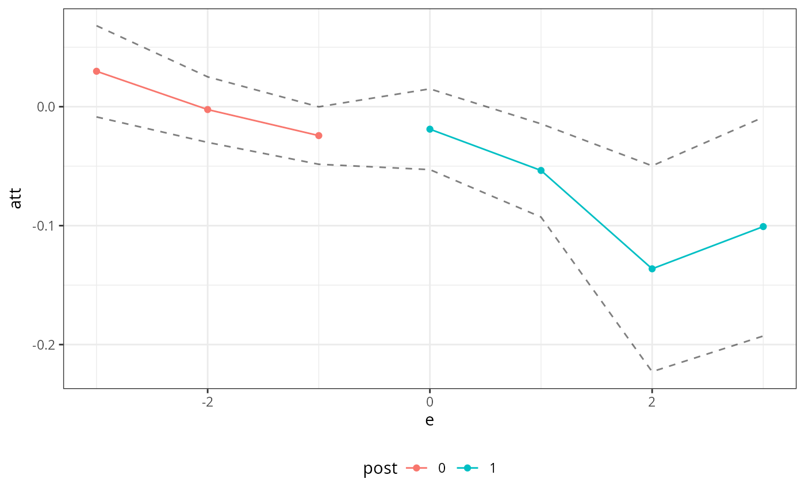

Tools for estimating treatment effects with panel data.
Main function for computing panel treatment effects
Usage
pte(
yname,
gname,
tname,
idname,
data,
setup_pte_fun,
subset_fun,
attgt_fun,
cband = TRUE,
alp = 0.05,
boot_type = "multiplier",
weightsname = NULL,
gt_type = "att",
ret_quantile = NULL,
global_fun = FALSE,
time_period_fun = FALSE,
group_fun = FALSE,
process_dtt_gt_fun = process_dtt_gt,
process_dose_gt_fun = process_dose_gt,
biters = 100,
cl = 1,
call = NULL,
...
)Arguments
- yname
Name of outcome in
data- gname
Name of group in
data- tname
Name of time period in
data- idname
Name of id in
data- data
balanced panel data
- setup_pte_fun
This is a function that should take in
data,yname(the name of the outcome variable indata),gname(the name of the group variable),idname(the name of the id variable), and possibly other arguments such as the significance levelalp, the number of bootstrap iterationsbiters, and how many clusters for parallel computing in the bootstrapcl. The key thing that needs to be figured out in this function is which groups and time periods ATT(g,t) should be computed in. The function should return apte_paramsobject which contains all of the parameters passed into the function as well asglistandtlistwhich should be ordered lists of groups and time periods for ATT(g,t) to be computed.This function provides also provides a good place for error handling related to the types of data that can be handled.
The
ptepackage contains the functionsetup_ptethat is a lightweight function that basically just takes the data, omits the never-treated group fromglistbut includes all other groups and drops the first time period. This works in cases where ATT would be identified in the 2x2 case (i.e., where there are two time periods, no units are treated in the first period and the identification strategy "works" with access to a treated and untreated group and untreated potential outcomes for both groups in the first period) — for example, this approach works if DID is the identification strategy.- subset_fun
This is a function that should take in
data,g(for group),tp(for time period), and...and be able to return the appropriatedata.framethat can be used byattgt_funto produce ATT(g=g,t=tp). The data frame should be constructed usinggt_data_framein order to guarantee that it has the appropriate columns that identify which group an observation belongs to, etc.- attgt_fun
This is a function that should work in the case where there is a single group and the "right" number of time periods to recover an estimate of the ATT. For example, in the contest of difference in differences, it would need to work for a single group, find the appropriate comparison group (untreated units), find the right time periods (pre- and post-treatment), and then recover an estimate of ATT for that group. It will be called over and over separately by groups and by time periods to compute ATT(g,t)'s.
The function needs to work in a very specific way. It should take in the arguments:
data,....datashould be constructed using the functiongt_data_framewhich checks to make sure thatdatahas the correct columns defined....are additional arguments (such as formulas for covariates) thatattgt_funneeds. From these argumentsattgt_funmust return a list with elementATTcontaining the group-time average treatment effect for that group and that time period.If
attgt_funreturns an influence function (which should be provided in a list element namedinf_func), then the code will use the multiplier bootstrap to compute standard errors for group-time average treatment effects, an overall treatment effect parameter, and a dynamic treatment effect parameter (i.e., event study parameter). Ifattgt_fundoes not return an influence function, then the same objects will be computed using the empirical bootstrap. This is usually (perhaps substantially) easier to code, but also will usually be (perhaps substantially) computationally slower.- cband
whether or not to report a uniform (instead of pointwise) confidence band (default is TRUE)
- alp
significance level; default is 0.05
- boot_type
should be one of "multiplier" (the default) or "empirical". The multiplier bootstrap is generally much faster, but
attgt_funneeds to provide an expression for the influence function (which could be challenging to figure out). If no influence function is provided, then theptepackage will use the empirical bootstrap no matter what the value of this parameter.- weightsname
The name of the column that contains sampling weights. The default is NULL, in which case no sampling weights are used.
- gt_type
which type of group-time effects are computed. The default is "att". Different estimation strategies can implement their own choices for
gt_type- ret_quantile
For functions that compute quantile treatment effects, this is a specific quantile at which to report results, e.g.,
ret_quantile = 0.5will return that the qte at the median.- global_fun
Logical indicating whether or not untreated potential outcomes can be estimated in one shot, i.e., for all groups and time periods. Main use case would be for one-shot imputation estimators. Not supported yet.
- time_period_fun
Logical indicating whether or not untreated potential outcomes can be estimated for all groups in the same time period. Not supported yet.
- group_fun
Logical indicating whether or not untreated potential outcomes can be estimated for all time periods for a single group. Not supported yet. These functions aim at reducing or eliminating running the same code multiple times.
- process_dtt_gt_fun
An optional function to customize results when the gt-specific function returns the distribution of treated and untreated potential outcomes. The default is
process_dtt_gt, which is a function provided by the package. See that function for an example of what this function should return. This is unused is unused except in cases where the results involve distributions.- process_dose_gt_fun
An optional function to customize results when the gt-specific function returns treatment effects that depend on dose (i.e., amount of the treatment). The default is
process_dose_gt, which is a function provided by the package. See that function for an example of what this function should return. This is unused except in cases where the results involve doses.- biters
number of bootstrap iterations; default is 100
- cl
number of clusters to be used when bootstrapping; default is 1
- call
keeps track of through the
callfrom external functions/packages- ...
extra arguments that can be passed to create the correct subsets of the data (depending on
subset_fun), to estimate group time average treatment effects (depending onattgt_fun), or to aggregating treatment effects (particularly useful aremin_e,max_e, andbalance_earguments to event study aggregations)
Author
Maintainer: Brantly Callaway brantly.callaway@uga.edu
Examples
# example using minimum wage data
# and difference-in-differences identification strategy
library(did)
data(mpdta)
did_res <- pte(
yname = "lemp",
gname = "first.treat",
tname = "year",
idname = "countyreal",
data = mpdta,
setup_pte_fun = setup_pte,
subset_fun = two_by_two_subset,
attgt_fun = did_attgt,
xformla = ~lpop
)
#> Warning: critical value for uniform confidence band is somehow smaller than
#> critical value for pointwise confidence interval...using pointwise
#> confidence interal
#> Warning: critical value for uniform confidence band is somehow smaller than
#> critical value for pointwise confidence interval...using pointwise
#> confidence interal
#> Warning: critical value for uniform confidence band is somehow smaller than
#> critical value for pointwise confidence interval...using pointwise
#> confidence interal
#> Warning: critical value for uniform confidence band is somehow smaller than
#> critical value for pointwise confidence interval...using pointwise
#> confidence interal
#> Warning: critical value for uniform confidence band is somehow smaller than
#> critical value for pointwise confidence interval...using pointwise
#> confidence interal
#> Warning: critical value for uniform confidence band is somehow smaller than
#> critical value for pointwise confidence interval...using pointwise
#> confidence interal
#> Warning: critical value for uniform confidence band is somehow smaller than
#> critical value for pointwise confidence interval...using pointwise
#> confidence interal
#> Warning: critical value for uniform confidence band is somehow smaller than
#> critical value for pointwise confidence interval...using pointwise
#> confidence interal
summary(did_res)
#>
#> Overall ATT:
#> ATT Std. Error [ 95% Conf. Int.]
#> -0.0305 0.0118 -0.0535 -0.0074 *
#>
#>
#> Dynamic Effects:
#> Event Time Estimate Std. Error [95% Conf. Band]
#> -3 0.0298 0.0167 -0.0086 0.0681
#> -2 -0.0024 0.0120 -0.0300 0.0251
#> -1 -0.0243 0.0105 -0.0484 -0.0001 *
#> 0 -0.0189 0.0148 -0.0529 0.0150
#> 1 -0.0536 0.0171 -0.0928 -0.0144 *
#> 2 -0.1363 0.0378 -0.2228 -0.0497 *
#> 3 -0.1008 0.0402 -0.1928 -0.0089 *
#> ---
#> Signif. codes: `*' confidence band does not cover 0
#>
ggpte(did_res)
